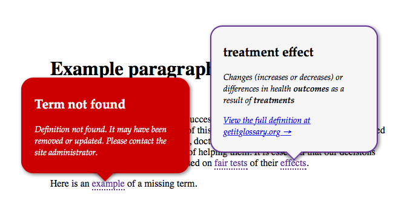
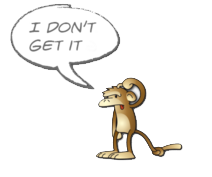

About this plugin
This jQuery plugin allows you to connect any website to the GET-IT Glossary of definitions of medical terms. It is easy to use and will scan web page copy for tagged terms.
Plugin installation
You can install the plugin from the commandline using Bower or NPM or simply download this repository and copy the dist folder into your web site javascript folder.
Manual installation
Include a reference to jQuery in your page header if it is not included already
<script src="https://ajax.googleapis.com/ajax/libs/jquery/2.2.0/jquery.min.js">Include the jquery-getit.css stylesheet (feel free to customise this to suit the way you want the popups and highlighted text to look
<link rel="stylesheet" href="/path/to/css/folder/jquery-getit.css">Include the jquery-getit.min.js script in your page.
<script src="/path/to/js/folder/jquery-getit.min.js">Finally call the code in your page. It is recommended that you attach it to the element that contains the definitons. In this example, this is a <div> with an id of main-content.
script example
<script>
$(document).ready( function(){
$('#main-content').getit();
});
</script>
Installing with Bower
Run this command from the root of your website:
bower install getitglossary/jquery-getit
Installing with NPM (Node Package Manager)
Run this command from the root of your website:
npm install getitglossary/jquery-getit
Preparing your website copy
jquery-getit will parse the content of the page (or a specific element, eg. .main-content) and look for text that is wrapped with a cite tag. If this text matches a term in the GET-IT Glossary, or if it has an attribute of data-term then jquery-getit will style this term and link a popup to it that provides the user with a detailed definition and links to the GET-IT Glossary.
Examples:
1. Text is the same as the term. The plugin is not case-sensitive so will match both 'Certainty' and 'certainty'
<cite>certainty of the evidence</cite>
2. Text is different or a variation of the term. Use the data-term attribute to specify which term to link to. There is a small performance benefit to be gained from always using the data-attribute.
<cite data-term="Number Needed to Harm">NNH</cite>
Here is some an example of some prepared HTML content (from the Testing Treatments Interactive website.)
We are using a div element with an ID of main-content to wrap the content that we intend to link to GET-IT Glossary
<div id="main-content">
It is essential that our decisions about
what <cite term="treatment">treatments</cite> to use
are based on <cite term="fair comparisons of treatments">fair tests</cite>
of their <cite term="treatment effect">effects</cite>.
</div>You can view a table of current terms here
Initialising and running the plugin
Option: Glossary
This will nominate a specific instance of the GET-IT Glossary for the plugin to link to. This is useful for international or audience-specific versions of the glossary (eg. espanol or kids). If this is not set, the Glossary will default to the main instance at (http://getitglossary.org).
Option: Style
You can customise the cite link style. We recommend differentiating it from standard web links, either through the use of an accent colour or alternative styling, eg. dashed underline, box, bold or italic type.
Plugin initialisation examples
Initialise the plugin and scan the target element for <cite> tags:
<script>
$(document).ready( function(){
$('#main-content').getit();
});
</script>
Initialise the plugin with the Spanish version of the Glossary:
<script>
$(document).ready( function(){
$('#main-content').getit({
glossary: 'es.getitglossary.org',
});
});
</script>
In our example above, clicking on the term 'fair tests' will return this popup definition, itself containing links to other definitions.
Authors and Contributors
Developer: Robin Layfield (@ultrasimplified)
Producer: Douglas Badenoch
Designer: Tom Brooks
Support & Contact
Having trouble with this plugin? Have an enquiry about accessing and using the GET-IT Glossary itself? [contact support] or raise an issue in the plugin's Github repository and we’ll help you sort it out.
